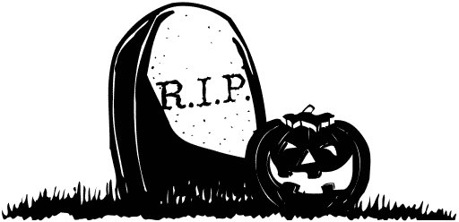

« předchozí článek | obsah čísla
V hale je rušno. Redaktoři se příjemně baví. Z reproduktorů zní hlas Hany Zagorové: „Navěky zůstane pouze čas. Neuvěřím, že je pravda věčná, po noci ráno že přijde zas a na nebi slunce že svítí.1.““ Nikoho nenapadne se nad těmi slovy zamyslet. Náhle vejde Hrobař novin v obnošeném šedém saku, které už nosil jako manažer desítek časopisů2. Pokyne sekretářce, aby ztlumila hudbu. Ta to udělá.
Hrobař přednese patetický projev. Ukloní se a odchází. Sekretářka opět zesílí hudbu, teď hraje Girls Just Wanna Have Fun od Cyndi Lauper. Každý se dál stará jen o to, kdy mu skončí jeho osmá hodina. Osmá hodina pracovní doby. Dnes se viděli naposledy. Dojde jim to až zítra, až se probudí. Navenek. Ve skutečnosti jim to nedojde nikdy.
Tak vypadá konec časopisu ve fantazii. Skutečnost je o mnoho drsnější a krutější. Člověk není tím, čím ho vychovali, aby si přál být. Není počítačem, který stačí vhodně naprogramovat a zásobovat energií a bude dělat cokoliv. Není univerzálním strojem, jehož efektivitu lze neomezeně zvyšovat zapojením online aplikací do jeho výchovy v dětství. Člověk během svého života prochází sérií změn, na které má určitý vliv, ale ne rozhodující. (Z tělesných k nim patří třeba růst prsů či mutace hlasu, ale ty psychické jsou neméně důležité, byť nejsou vidět.) Některé z nich přijme s radostí, jiné s odporem; některé mu přinesou úzkost a strach z neznáma, jiné štěstí a spokojenost; s některými se třeba nedokáže vyrovnat a v bezradnosti či pomýlenosti pak ubližuje svým nejbližším, aniž by se za to cítil odpovědný. Před dalšími zase člověk utíká a vyčerpává se vnitřním bojem v naději, že jim unikne.
Všechny tyto změny se promítají do činností, kterými se člověk zabývá. Někdy jen přechází k jiným způsobům, jakými svoji činnost vykonává; jindy nastane doba, kdy si uvědomí, že je čas předat tuto činnost dalším, zpravidla mladším. Jsou však činnosti, které jsou natolik spjaty s konkrétními lidmi, že je předat nelze nebo to není třeba, protože by to bylo neužitečné. Zdá se, že tvorba Neslyšného kočkopsa k nim patří.
Jménem redakce Neslyšného kočkopsa tedy děkuji autorům, kteří kdy do tohoto časopisu přispěli, jmenovitě Anně Benešové, Jarmile Flakové, Kateřině Hrabánkové, Davidu Hromádkovi, Janě Hykešové, Janě Nagyové, Vladimíru Němcovi, Mikoláši Štrajtovi, Anně Štrajtové, Magdě Štrajtové a Jakubu Tomaštíkovi. Zvlášť děkuji Dominice Izákové za ilustrace, které dodávaly Neslyšnému kočkopsovi jedinečný výtvarný styl. A in memoriam děkuji také Josefu Čapkovi, Karlu Čapkovi a Boženě Němcové za jejich literární díla uveřejněná v rubrice Knihovnička Neslyšného kočkopsa.
Říká se, že novináři (včetně redaktorů časopisů) jsou mistry v psaní dlouhých článků, z nichž se čtenáři nedozví to nejpodstatnější — co se vlastně stalo. Dovolím si tentokrát udělat výjimku a v poslední větě vám to sdělit: Tímto číslem Neslyšný kočkopes končí.
